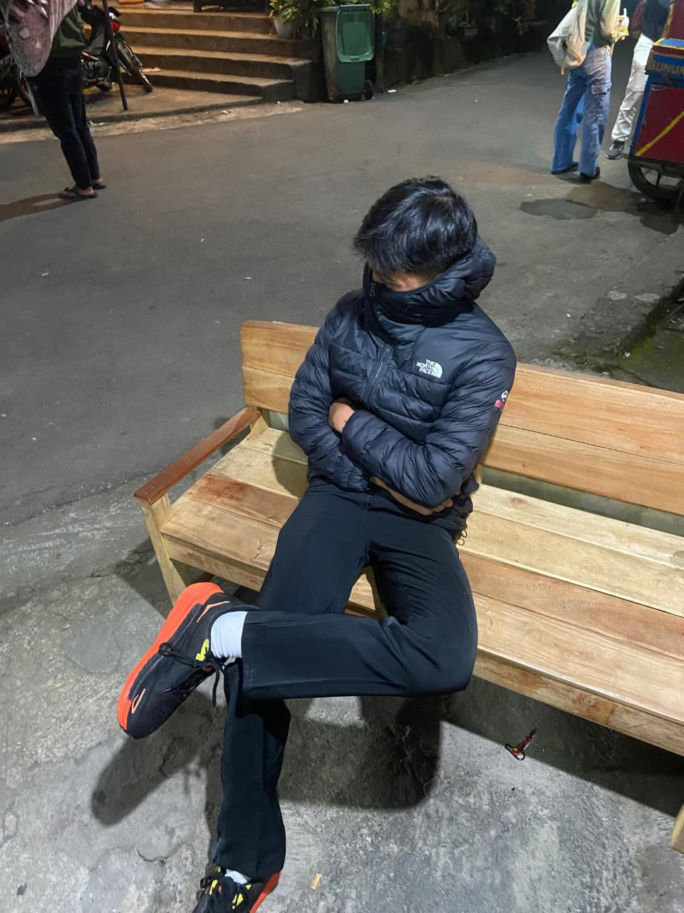

Tentang Saya
Saya seorang pendaki fomo yang mencintai alam. Website ini adalah tempat saya mendokumentasikan setiap cerita dari setiap puncak yang saya pijak. Saya harap cerita ini dapat menginspirasi.